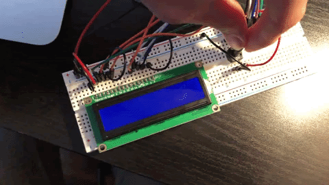
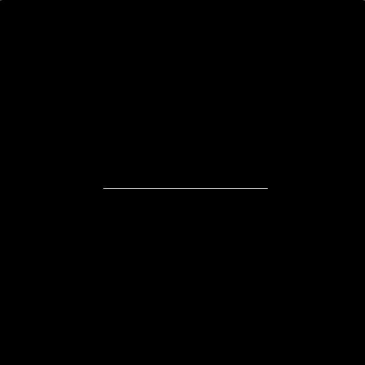
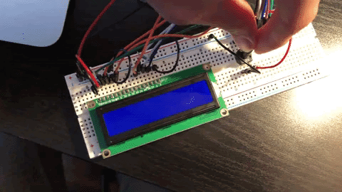
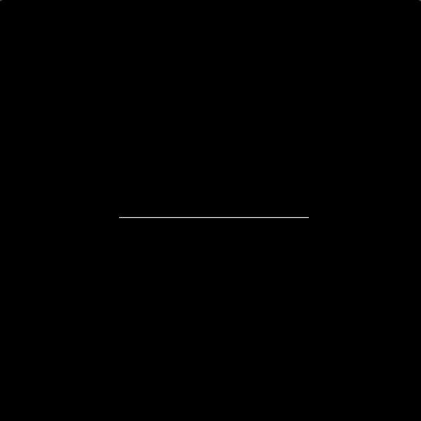
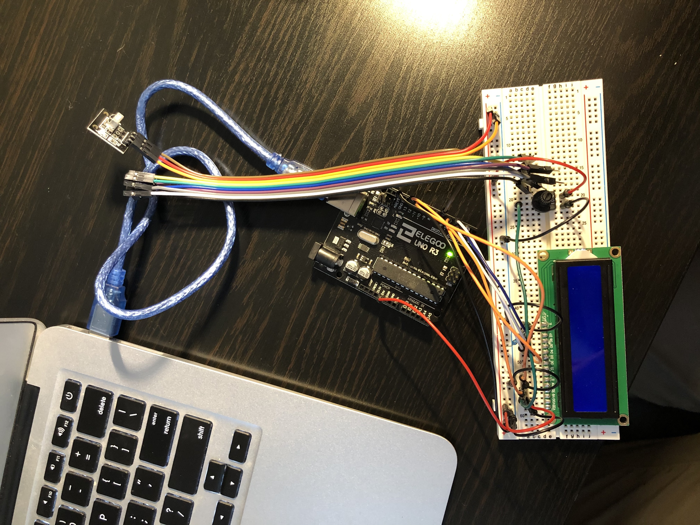
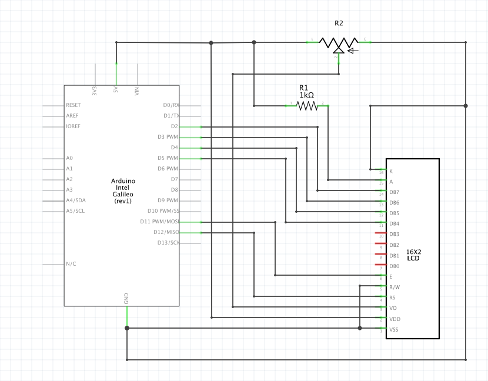

Yuki Asakura's Assignment 7!

 



Circuit Operation. A polygon with X sides will be drawn on the screen based on the number you press on the IR Remote or the Keyboard. These numbers are then shown on the LCD Display. The potentiometer acts as an input to the LCD display turning the brightness of the display up and down. The size of each polygon is randomly generated.

Circuit board. There is an LCD Display, potentiometer, and an IR sensor inside the breadboard.
var serial; // variable to hold an instance of the serialport library
var portName = '/dev/cu.usbmodem14101' // rename to the name of your port
var datain = 0; // some data coming in over serial
var randoSize = 100; // initializing a random size of the polygon
function setup() { // setup function
serial = new p5.SerialPort(); // make a new instance of the serialport library
serial.on('list', printList); // set a callback function for the serialport list event
serial.on('connected', serverConnected); // callback for connecting to the server
serial.on('open', portOpen); // callback for the port opening
serial.on('data', serialEvent); // callback for when new data arrives
serial.on('error', serialError); // callback for errors
serial.on('close', portClose); // callback for the port closing
serial.list(); // list the serial ports
serial.open(portName); // open a serial port
createCanvas(1200, 800); // create a canvas of size 1200x800
background(0); // change background color
noLoop(); // prevent draw() to loop every frame
}
function printList(portList) { // get the list of ports:
for (var i = 0; i < portList.length; i++) { // portList is an array of serial port names
print(i + " " + portList[i]); // Display the list the console:
}
}
function serverConnected() { // check if it is connected to the server
print('connected to server.'); // print if it is connected to the server
}
function portOpen() { // check if the serial port is open
print('the serial port opened.') // print if the serial port is open
}
function serialError(err) { // check if there was an error with the serial port
print('Something went wrong with the serial port. ' + err); // print if there was an error with the serial port
}
function portClose() { // check if the serial port closed
print('The serial port closed.'); // print if the serial port closed
}
function serialEvent() { // this runs every time there is a serial number available
if (serial.available()) { // check if serial is available
datain = Number(serial.readLine()); // reads each line of the serial monitor
console.log("got back:" + datain); // logs the data value in the console
redraw(); // run the draw() function
}
}
function star(x, y, radius1, radius2, npoints) { // draws a star
noFill(); // no fill for the star
stroke(255); // stroke is white
let angle = TWO_PI / npoints; // The angle in radians per each polygon side
let halfAngle = angle / 2.0; // Half the angle
beginShape(); // Start the shape
for (let a = 0; a < TWO_PI; a += angle) { // Drawing a verex via a for loop
let sx = x + cos(a) * radius2; // set sx as the x coordinate of a vertex
let sy = y + sin(a) * radius2; // set sy as the y coordinate of a vertex
vertex(sx, sy); // draw a vertex at (sx, sy)
sx = x + cos(a + halfAngle) * radius1; // update sx
sy = y + sin(a + halfAngle) * radius1; // update sy
vertex(sx, sy); // draw a vertex with new (sx, sy)
}
endShape(CLOSE); // end the shape
}
function keyPressed() { // run this when a key is pressed
serial.write(key); // write the pressed key to the serial monitor
}
function draw() {
randoSize = Math.floor(Math.random() * 100) + 50; // set the random size of the polygon
star(width*0.5, height*0.5, randoSize, randoSize, datain); // draw the star
}
JS Code Snippet
#include // include the IR remote library
#include // include the Liquid Crystal library
const int RECV_PIN = 7; // set the reciever pin as 7
LiquidCrystal lcd(12, 11, 5, 4, 3, 2); // initializing the lcd display
IRrecv irrecv(RECV_PIN); // set the irrecv pin
decode_results results; // results at decode_results
unsigned long key_value = 0; // set key balue
void setup(){
Serial.begin(9600); // begin serial monitor
irrecv.enableIRIn(); // enable IR in
irrecv.blink13(true); // blink led 13 if they recieve an IR signal
lcd.begin(16, 2); // begin lcd
}
void loop(){ // this loop runs
if (irrecv.decode(&results)){ // decode the results
if (results.value == 0XFFFFFFFF) // if there is a value from the IR sensor
results.value = key_value; // set the value as the key value
lcd.setCursor(0, 0); // set the cursor at 0,0
lcd.clear(); // clear the lcd display
switch(results.value){ // "a fancy if statement"
case 0xFFA25D: // if signal is 0xFFA25D
lcd.print("CH-"); // print "CH-" on the LCD display
break; // break the case
case 0xFF629D: // *I would write comments for all of these but essentially
lcd.print("CH"); // they are all doing the same thing by setting a case and
break; // printing that value to the LCD*
case 0xFFE21D:
lcd.print("CH+");
break;
case 0xFF22DD:
lcd.print("|<<");
break;
case 0xFF02FD:
lcd.print(">>|");
break ;
case 0xFFC23D:
lcd.print(">|");
break ;
case 0xFFE01F:
lcd.print("-");
break ;
case 0xFFA857:
lcd.print("+");
break ;
case 0xFF906F:
lcd.print("EQ");
break ;
case 0xFF6897:
lcd.print("0");
Serial.println("0");
break ;
case 0xFF9867:
lcd.print("100+");
break ;
case 0xFFB04F:
lcd.print("200+");
break ;
case 0xFF30CF:
lcd.print("1");
Serial.println("1");
break ;
case 0xFF18E7:
lcd.print("2");
Serial.println("2");
break ;
case 0xFF7A85:
lcd.print("3");
Serial.println("3");
break ;
case 0xFF10EF:
lcd.print("4");
Serial.println("4");
break ;
case 0xFF38C7:
lcd.print("5");
Serial.println("5");
break ;
case 0xFF5AA5:
lcd.print("6");
Serial.println("6");
break ;
case 0xFF42BD:
lcd.print("7");
Serial.println("7");
break ;
case 0xFF4AB5:
lcd.print("8");
Serial.println("8");
break ;
case 0xFF52AD:
lcd.print("9");
Serial.println("9");
break ;
}
key_value = results.value; // set the value as the key value
irrecv.resume(); // resume receiving data
}
if (Serial.available() > 0) { // if there's serial data
if (results.value == 0XFFFFFFFF) // if there is a value from the IR sensor
results.value = key_value; // set reslts.value as the key_value
lcd.setCursor(0, 0); // set the cursor at 0,0
lcd.clear(); // clear LCD
int inByte = Serial.read() - '0'; // read it as an integer by subtracting '0'. This converts binary to an int
Serial.println(inByte); // send it back out as an integer
lcd.print(inByte); // set the LCD with the integer
}
}
Arduino code

Schematic + Calculation
function star(x, y, radius1, radius2, npoints) { // draws a star
noFill(); // no fill for the star
stroke(255); // stroke is white
let angle = TWO_PI / npoints; // The angle in radians per each polygon side
let halfAngle = angle / 2.0; // Half the angle
beginShape(); // Start the shape
for (let a = 0; a < TWO_PI; a += angle) { // Drawing a verex via a for loop
let sx = x + cos(a) * radius2; // set sx as the x coordinate of a vertex
let sy = y + sin(a) * radius2; // set sy as the y coordinate of a vertex
vertex(sx, sy); // draw a vertex at (sx, sy)
sx = x + cos(a + halfAngle) * radius1; // update sx
sy = y + sin(a + halfAngle) * radius1; // update sy
vertex(sx, sy); // draw a vertex with new (sx, sy)
}
endShape(CLOSE); // end the shape
}
In my Javascript code, there is a function where I draw a polygon. This calculation is done with a for loop by drawing 2 vertexes of a polygon and connecting them until 1 full revolution (or 2pi radians) is made. The inputs of x and y controls the (X,Y) coordinates, radius 1 and radius 2 controls the width and height, and npoints controls the amount of points on the polygon.